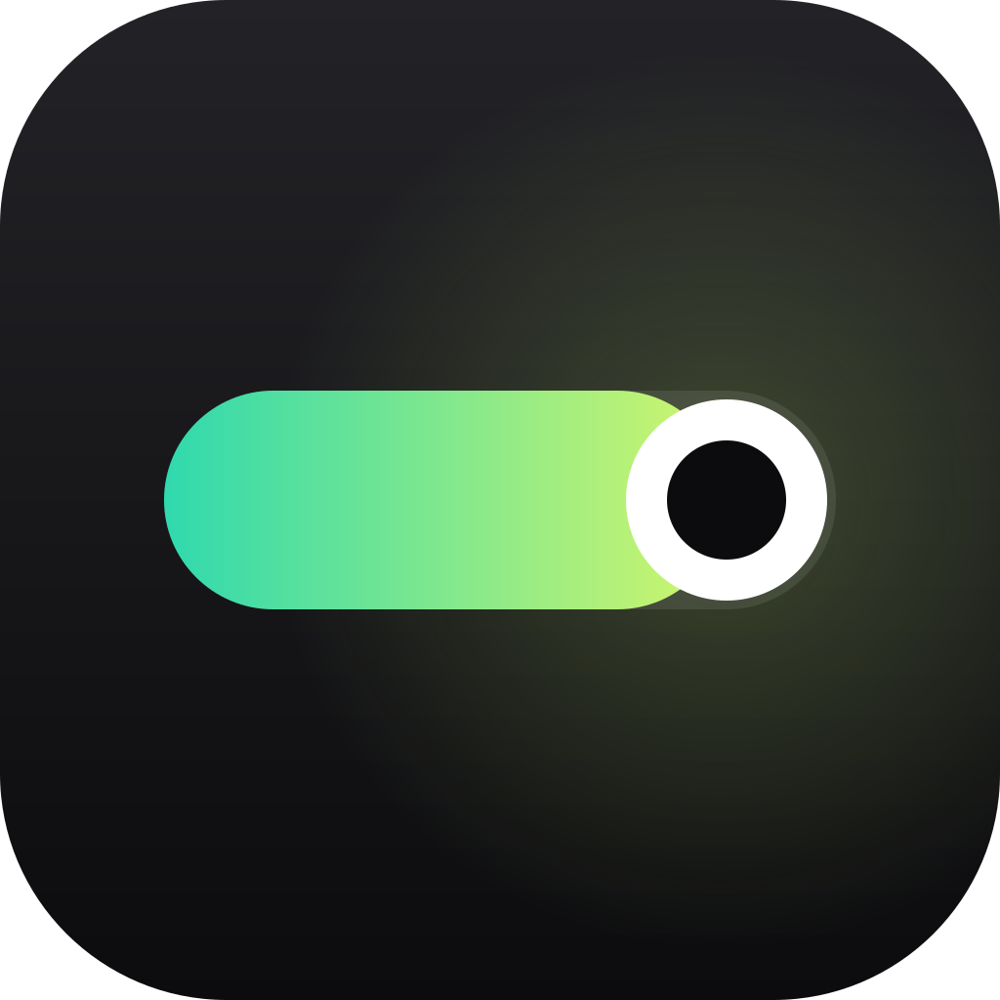

Lanczos
Redução nítida, sem serrilhado. Na placa de vídeo.

Relay ConverterRelay · Absolute ZRO
Vídeo e áudio no formato certo para cada destino. No seu aparelho, sem cadastro.
Redução nítida, sem serrilhado. Na placa de vídeo.
Usa o chip de vídeo do seu aparelho.
BT.709 marcado. Igual em todo player.
20 MB? Escolhe a resolução que fica nítida.
Nenhum upload. Converte aqui mesmo, até offline.
Uma conta Absolute ZRO. O Relay aparece onde você precisa exportar.